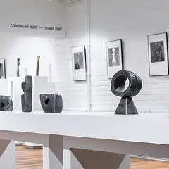
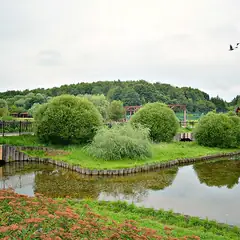

Районы · ВАО
Куда сходить на востоке Москвы
40 мест на востоке Москвы: 16 компьютерных клубов, 7 мест для прогулки, 4 развлечения и 4 бани или спа. Например, «Измайловский кремль», «Кусково» и «Сиреневый сад». 21 готовый план начинается здесь. Больше всего мест у станций «Сокольники», «Щёлковская» и «Новогиреево».
- 40 мест
- 21 план
- 16 клубов
Места 24
Измайловское ш., 73Ж
Сказочный деревянный кремль у Партизанской: музеи, мастер-классы и блошиный «Вернисаж» рядом.
Подробнее и маршрут: Измайловский кремльПозвать сюда: Измайловский кремль
Фото: Simm, CC BY-SA 2.5 · Wikimedia Commons
ул. Юности, 2
Усадьба Шереметевых: дворец, Голландский домик, Грот и большой пруд.
Подробнее и маршрут: КусковоПозвать сюда: Кусково
Фото: A.Savin, Free Art License · Wikimedia Commons
Щёлковское ш.
Сад на Щёлковском шоссе с сотнями сортов сирени — лучшее время в мае.
Подробнее и маршрут: Сиреневый садПозвать сюда: Сиреневый сад
Фото: Kristy2906, CC BY-SA 4.0 · Wikimedia Commons
ул. Сокольнический Вал, 1
Большой парк с лучевыми аллеями, розарием, прокатом и выходом в лес.
Подробнее и маршрут: СокольникиПозвать сюда: Сокольники
Фото: Alexx Zimin, CC BY-SA 4.0 · Wikimedia Commons
Городок им. Баумана, 2
Царская усадьба на острове: Покровский собор, Мостовая башня и ворота XVII века.
Подробнее и маршрут: Усадьба ИзмайловоПозвать сюда: Усадьба Измайлово
Фото: NVO, CC BY 3.0 · Wikimedia Commons
Народный пр., 17
Огромный парк с лесом, прудами и прокатом. На выходных — на весь день.
Подробнее и маршрут: Измайловский паркПозвать сюда: Измайловский парк
Фото: d.wine, CC BY-SA 2.5 · Wikimedia Commons
Поперечный просек, 1Г
Настоящий лес в городе: экотропы, лосиная биостанция и велодорожки.
Подробнее и маршрут: Лосиный островПозвать сюда: Лосиный остров
Фото: Nikiforovvb, CC BY-SA 4.0 · Wikimedia Commons

Новогиреевская ул., 37
Музей скульптора-авангардиста Вадима Сидура в Перове.
Подробнее и маршрут: Музей Вадима СидураПозвать сюда: Музей Вадима Сидура
Фото: пресс-служба Правительства Москвы, CC BY 4.0 · Wikimedia Commons

Свободный просп.
Лесопарк на востоке с каскадом прудов и родниками.
Подробнее и маршрут: Терлецкий паркПозвать сюда: Терлецкий парк
Фото: Руслан Абдуллин, CC BY-SA 4.0 · Wikimedia Commons
просп. Будённого, 33
Новое
Бани с 1939 года, известные очень жарким паром: хаммам с мыльным массажем, соляная пещера, мужское и женское отделения, VIP-кабинеты для компании.
Подробнее и маршрут: Бани «Соколиная Гора»Позвать сюда: Бани «Соколиная Гора»
Сиреневый бул., 23А
Новое
Кальянная с караоке на Сиреневом бульваре у Щёлковской: русские и зарубежные хиты, VIP-комната, летом терраса. В пт–сб до 6 утра, в остальные дни до 5.
Подробнее и маршрут: Gallery LoungeПозвать сюда: Gallery Lounge
Большая Косинская ул., 45
Яхт-клуб на Белом озере: прогулочная зона, разноцветные домики и атмосфера курортного городка на востоке Москвы.
Подробнее и маршрут: Белое озеро в КосинеПозвать сюда: Белое озеро в Косине
6-я Парковая ул., 21
Новое
Сталинское здание 1953 года с петровскими мозаиками и резьбой: сеанс 2 часа от 1 500 ₽, для компании — кабинеты на 5, 6 и 12 человек. Есть женские дни.
Подробнее и маршрут: Измайловские баниПозвать сюда: Измайловские бани
1-я Владимирская ул., 12, корп. 1
КруглосуточноНовое
Круглосуточный квест-центр у «Перова»: жёсткий хоррор «Антихрист» с сильными актёрами и спокойные загадки вроде «Кода да Винчи». Страх можно подкрутить на месте.
Подробнее и маршрут: Компонент КвестПозвать сюда: Компонент Квест
Новоухтомское ш., 2А
Новое
Городской рыбный рынок в ТЦ в Косине: выбираешь рыбу или морепродукты на прилавке, и их готовят при тебе. Отдельная стойка с селёдкой и копчёностями.
Подробнее и маршрут: Москва — на волнеПозвать сюда: Москва — на волне
3-й пр. Перова Поля, 8
КруглосуточноНовое
Шесть бревенчатых срубов на компанию до 8, 12 или 30 человек: парная на дровах, караоке, бильярд и приставки. Круглосуточно, от 5 000 ₽ в час.
Подробнее и маршрут: Перовские баниПозвать сюда: Перовские бани
Черницынский пр., 3, стр. 1
Новое
Хоррор-квесты в Гольянове: «Ассистенты морга» и «Объект 1975» с давящей атмосферой и проработанными локациями. Без контакта с актёрами, но страшно всерьёз.
Измайловский бул., 41
Театр, где играют глухие и слабослышащие актёры, — спектакли понятны без слов.
Подробнее и маршрут: Театр мимики и жестаПозвать сюда: Театр мимики и жеста
Амурская ул., 1А, корп. 5
Новое
Кафе с собственной пекарней на востоке Москвы: шакшука, скандинавский завтрак с пастрами, домашние десерты. Завтраки и бранчи каждый день с 10 утра.
пр. Сокольнического Круга, 2
Ресторан прямо в парке «Сокольники» после большого обновления.
Первомайская ул., 5
Новое
Квесты у «Измайловской», где актрисы играют с порога и выручают в трудных местах. Хит — «Запретная дверь»: страшно, но пускают и подростков. От 5500 ₽.
Яузская аллея, 8
КруглосуточноНовое
Закрытая усадьба у Лосиного острова: просторные терема с парной на берёзовых дровах, бассейном и купелью во дворе. Круглосуточно, от 8 500 ₽ в час.
Подробнее и маршрут: Усадьба Банная на Лосином островеПозвать сюда: Усадьба Банная на Лосином острове
Преображенская ул., 2
Новое
Недорогой паб у «Преображенской площади»: британский и ирландский эль на кранах, рагу и бургеры, матчи на экранах регулярно — звук включают по просьбе гостей.
Подробнее и маршрут: Lock Stock PubПозвать сюда: Lock Stock Pub
Сокольническая пл.
Бар от создателей «The Бык» с фиксированными ценами на большинство позиций.


Готовые планы 18 из 21
- Сиреневый сад · Сад · м. Черкизовская
- 11 минут пешкомBrancho · Кафе завтраков
Утренняя прогулка по Сиреневому саду на Щёлковском шоссе, а потом Brancho со своей пекарней: шакшука или скандинавский завтрак с пастрами.
Открыть план: Сиреневый сад и шакшукаПозвать сюда: Сиреневый сад и шакшука
Фото: Kristy2906, CC BY-SA 4.0 · Wikimedia Commons
- Усадьба Измайлово · Музей-усадьба · м. Партизанская
- 12 минут пешкомImmerscape · Квест с актёрами
Прогулка по острову усадьбы Измайлово мимо Покровского собора, а потом «Запретная дверь» в Immerscape: актрисы играют с порога и выручают, если совсем страшно.
Открыть план: Царский остров и «Запретная дверь»Позвать сюда: Царский остров и «Запретная дверь»
Фото: NVO, CC BY 3.0 · Wikimedia Commons
- Сокольники · Парк · м. Сокольники
- 1 минута пешкомGreen Park · Ресторан в парке
Лучевые аллеи в золоте и выход в лес, а потом обед в ресторане прямо в парке.
Открыть план: Аллеи СокольниковПозвать сюда: Аллеи Сокольников
Фото: Alexx Zimin, CC BY-SA 4.0 · Wikimedia Commons
- Измайловский парк · Парк · м. Партизанская
- 12 минут пешкомИзмайловский кремль · Культурный комплекс
Большой круг по осеннему лесопарку с прудами, потом деревянный кремль: музеи, мастер-классы и блошиный «Вернисаж» рядом.
Открыть план: Измайлово на весь деньПозвать сюда: Измайлово на весь день
Фото: d.wine, CC BY-SA 2.5 · Wikimedia Commons
- Измайловский кремль · Культурный комплекс · м. Партизанская
- 15 минут пешкомУсадьба Измайлово · Музей-усадьба
Сказочный Измайловский кремль и царская усадьба на острове.
Открыть план: Кремль и царский островПозвать сюда: Кремль и царский остров
Фото: Simm, CC BY-SA 2.5 · Wikimedia Commons
- Сокольники · Парк · м. Сокольники
Лучевые аллеи Сокольников уходят прямо в лес: можно гулять с собакой час или три и почти не выходить к дорогам.
Открыть план: Сокольники с собакойПозвать сюда: Сокольники с собакой
Фото: Alexx Zimin, CC BY-SA 4.0 · Wikimedia Commons
- Белое озеро в Косине · Озеро и яхт-клуб · м. Улица Дмитриевского
- 21 минута пешкомМосква — на волне · Рыбный рынок
Прогулка у Белого озера в Косине мимо разноцветных домиков яхт-клуба, а потом рынок «Москва — на волне»: выбираешь рыбу на прилавке, и её готовят при тебе.
Открыть план: Белое озеро и рыбный рынокПозвать сюда: Белое озеро и рыбный рынок
- Лосиный остров · Национальный парк · м. Сокольники
Велодорожки и экотропы через настоящий осенний лес. Можно доехать до лосиной биостанции.
Открыть план: Велик по Лосиному островуПозвать сюда: Велик по Лосиному острову
Фото: Nikiforovvb, CC BY-SA 4.0 · Wikimedia Commons
- Кусково · Усадьба · м. Новогиреево
Усадьба Шереметевых: Голландский домик, Грот и длинная прогулка вокруг большого пруда.
Открыть план: Дворец и пруд в КусковоПозвать сюда: Дворец и пруд в Кусково
Фото: A.Savin, Free Art License · Wikimedia Commons
- Компонент Квест · Квест с актёрами · м. Перово
- 12 минут пешкомПеровские бани · Бани на дровах
Круглосуточный «Компонент Квест» у «Перова» — хоррор «Антихрист» или спокойный «Код да Винчи», — а потом бревенчатый сруб Перовских бань с караоке и бильярдом, тоже до утра.
Открыть план: Квест и баня до утраПозвать сюда: Квест и баня до утра
- Измайловские бани · Баня · м. Первомайская
- 21 минута пешкомGallery Lounge · Кальянная с караоке
Измайловские бани 1953 года с мозаиками — сеанс от 1 500 ₽, кабинеты на 5–12 человек, — а потом караоке в Gallery Lounge на Сиреневом бульваре.
Открыть план: Сталинские бани и караокеПозвать сюда: Сталинские бани и караоке
- Театр мимики и жеста · Театр · м. Первомайская
- 12 минут пешкомGallery Lounge · Кальянная с караоке
Спектакль в Театре мимики и жеста, где всё понятно без слов, а потом караоке Gallery Lounge на Сиреневом бульваре — уж там слов будет много.
Открыть план: Театр без слов и караокеПозвать сюда: Театр без слов и караоке
- Кусково · Усадьба · м. Новогиреево
Дворец Шереметевых, Голландский домик и Грот у большого пруда — осенние кадры получаются сами.
Открыть план: Фотосессия в КусковоПозвать сюда: Фотосессия в Кусково
Фото: A.Savin, Free Art License · Wikimedia Commons
- Colizeum Сокольники · Компьютерный клуб · м. Сокольники
- 7 минут пешкомThe Pivo · Пивной бар
Colizeum на Русаковской со свежим железом и PlayStation 5, а через семь минут — The Pivo на Сокольнической площади с фиксированными ценами.
Открыть план: Сокольники: катка и пивоПозвать сюда: Сокольники: катка и пиво
- Подземка · Хоррор-квест · м. Щёлковская
Два хоррора «Подземки» в Гольянове — «Ассистенты морга» и «Объект 1975»: актёры вас не трогают, но давящие декорации пугают не хуже.
Открыть план: Морг и «Объект 1975»Позвать сюда: Морг и «Объект 1975»
- Бани «Соколиная Гора» · Баня и хаммам · м. Лефортово
Бани «Соколиная Гора» с 1939 года славятся очень жарким паром: хаммам с мыльным массажем, соляная пещера и VIP-кабинеты, чтобы посидеть своей компанией.
Открыть план: Самый жаркий пар на востокеПозвать сюда: Самый жаркий пар на востоке
- Белое озеро в Косине · Озеро и яхт-клуб · м. Улица Дмитриевского
Яхт-клуб, разноцветные домики и прогулка у воды — почти курорт на востоке Москвы.
Открыть план: Белое озеро в КосинеПозвать сюда: Белое озеро в Косине
- Colizeum Семёновская · Компьютерный клуб · м. Электрозаводская
Круглосуточный клуб: берите ночной пакет, энергетики и не смотрите на часы.
Открыть план: Ночь в Colizeum на СемёновскойПозвать сюда: Ночь в Colizeum на Семёновской
Компьютерные клубы 10 из 16
Амурская ул., 1А, корп. 3
Круглосуточно
Круглосуточный клуб рядом со станцией МЦК «Локомотив».
Подробнее и маршрут: Colizeum АмурскаяПозвать сюда: Colizeum Амурская
Свободный просп., 20А (ТЦ «Олимп»)
Круглосуточно
Круглосуточный клуб в ТЦ «Олимп» у «Новогиреева»: компы на RTX 3070 и RTX 4070.
Подробнее и маршрут: Colizeum ОлимпПозвать сюда: Colizeum Олимп
Большая Семёновская ул., 28
Круглосуточно
Круглосуточный клуб у «Электрозаводской» — рядом Политех.
Подробнее и маршрут: Colizeum СемёновскаяПозвать сюда: Colizeum Семёновская
Русаковская ул., 22
Клуб на Русаковской у «Сокольников» со свежим железом, буткемпами и PlayStation 5.
Подробнее и маршрут: Colizeum СокольникиПозвать сюда: Colizeum Сокольники
Щёлковское ш., 75 (ТРЦ «Щёлковский»)
Круглосуточно
Круглосуточный клуб в ТРЦ «Щёлковский» у одноимённого метро и автовокзала.
Подробнее и маршрут: Colizeum Camp ЩёлковскийПозвать сюда: Colizeum Camp Щёлковский
Краснобогатырская ул., 90, стр. 2
Круглосуточно
Круглосуточный клуб с турнирным залом; у сети есть мониторы до 540 Гц — мечта для шутеров.
Хабаровская ул., 15
Клуб в Гольянове: мощные ПК, буткемпы и консоли.
Подробнее и маршрут: Colizeum ГольяновоПозвать сюда: Colizeum Гольяново
Первомайская ул., 42
Клуб в семи минутах от «Измайловской»: общий зал на RTX 2060 и буткемпы на RTX 3060.
Подробнее и маршрут: Colizeum ИзмайловоПозвать сюда: Colizeum Измайлово
15-я Парковая ул., 27/1
Клуб в Восточном Измайлове: игровые ПК, VIP-буткемпы, PlayStation 5 и бар с горячей едой.
Подробнее и маршрут: Colizeum ПарковаяПозвать сюда: Colizeum Парковая
Открытое ш., 4, стр. 1
Клуб у «Бульвара Рокоссовского», рядом с Лосиным Островом: игровые ПК, буткемпы и консоли.
Подробнее и маршрут: Colizeum РокоссовскогоПозвать сюда: Colizeum Рокоссовского
Как позвать
- Выбери план, место или событие — в карточке адрес, цены и маршрут в Яндекс Картах.
- Нажми «Позвать сюда» — соберётся приглашение-игра для свидания или голосование для компании.
- Отправь ссылку в любой мессенджер: тебе ответят, а компания отметит, куда и когда может. Бесплатно и без регистрации.